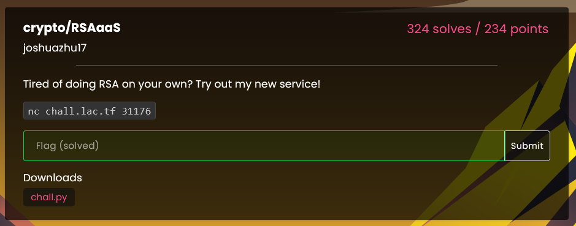

Troy Lopez
LaCTF Writeup - RSAaaS
Crypto / 324 Solves / 234 Points

Challenge Description:
Source here. RSAaaS required you to trigger an exception in a Python script that takes RSA constants P, Q as inputs and enables encryption and decryption of messages. Nearly all of the code is wrapped in try-except statements to prevent errors, so a simple bad input won't reach the vulnerable section of the code:
This gives us a pretty limited number of places to throw an exception. The majority of the code is safe, with exceptions anticipated by catch statements. The only outlier is the calculation of φ(n) and d. If we can trigger an error in the pow() call, we can force an exception and get the flag. This happens when computing the modular inverse of e mod φ(n). The modular inverse only exists if e and φ(n) are coprime. If they are not, the decryption function is undefined, leading to a failure. (See this StackExchange post for a deeper dive into the math.)
The Exploit
To trigger this exception, we need p, q such that φ(n) is **not** coprime to e. A brute-force search for such values would take an impractical amount of time, as there are roughly 2.08e34 possible prime pairs. Instead, we can refine our search by ensuring that p - 1 and q - 1 are always divisible by e. This guarantees that gcd(e, φ(n)) = e, making the modular inverse calculation fail.
func generatePrime(bits int) *big.Int {
// We want p = e*k + 1 to be prime
// This ensures e divides p-1
for {
// Generate k with appropriate size
bound := new(big.Int).Lsh(big.NewInt(1), uint(bits-17))
k, err := rand.Int(rand.Reader, bound)
if err != nil {
panic(err)
}
// Calculate p = e*k + 1
p := new(big.Int).Mul(big.NewInt(e), k)
p.Add(p, big.NewInt(1))
// Check if p is in valid range (63-64 bits) and prime
if p.BitLen() == 64 && p.ProbablyPrime(20) {
return p
}
}
}
Actions on Objectives
Now that we have a way to generate primes that **guarantee** φ(n) is not coprime to e, we can automate our search for valid values of p and q. We can verify success by computing gcd(e, φ(n)) and confirming that it equals e. Once we have such primes, we can input them into the challenge service and trigger the exception to receive the flag.
My full solution script can be found here.
We can take our generated values and punch them into the remote for the flag!
Finding suitable primes...
Found primes:
p = 9223416257379056749
q = 9223373135414314561
gcd(e, φ(n)) = 65537
tlop@blackwall:~$ nc chall.lac.tf 31176
Welcome to my RSA as a Service!
Pass me two primes and I'll do the rest for you.
Let's keep the primes at a 64-bit size, please.
Input p: 9223401798050494063
Input q: 9223456918375053227
Oh no! My service! Please don't give us a bad review!
Here, have a complimentary flag for your troubles.
lactf{actually_though_whens_the_last_time_someone_checked_for_that}
Epilogue
This was a really interesting challenge. My cryptography class is about to cover **asymmetric cryptography**, but since we haven't yet, I had to do a fair bit of research to understand how RSA works under the hood. I initially wrote a Python script to find valid p and q values, but it was too slow, so I optimized the process using Go. This challenge gave me a much better understanding of RSA, and I look forward to learning more about the underlying math.
2/9/25